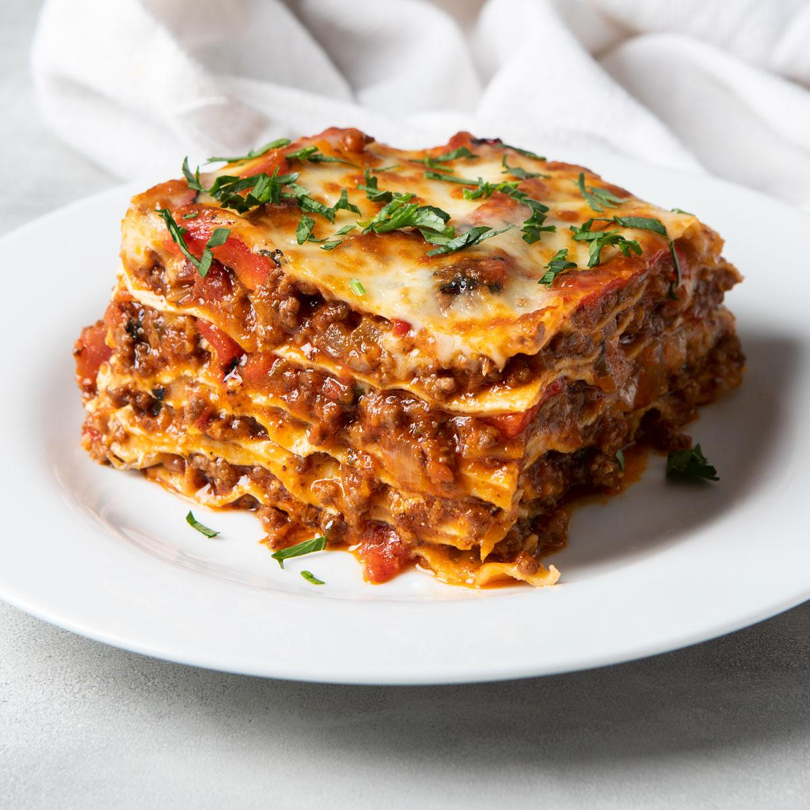

Lasagna Recipe

Description
Whole wheat noodles and lean ground beef make this tasty favorite a little lighter.
Ingredients
- 12 whole wheat lasagna noodles
- 1 pound lean ground beef
- 2 cloves garlic, chopped
- ½ teaspoon garlic powder
- 1 teaspoon dried oregano, or to taste
- salt and ground black pepper to taste
- 1 (16 ounce) package cottage cheese
- 2 eggs
- ½ cup shredded Parmesan cheese
- 1 ½ (25 ounce) jars tomato-basil pasta sauce
- 2 cups shredded mozzarella cheese
Steps
- Preheat oven to 350 degrees F (175 degrees C).
- Fill a large pot with lightly salted water and bring to a rolling boil over high heat. Once the water is boiling, add the lasagna noodles a few at a time, and return to a boil. Cook the pasta uncovered,
stirring occasionally, until the pasta has cooked through, but is still firm to the bite, about 10 minutes. Remove the noo
- In a bowl, mix the cottage cheese, eggs, and Parmesan cheese until thoroughly combined.
- Bake in the preheated oven until the casserole is bubbling and the cheese has melted, about 30 minutes.
Remove foil and bake until cheese has begun to brown, about 10 more minutes. Allow to stand at le
Home